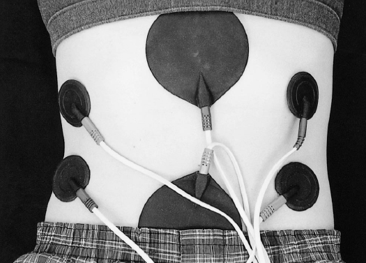
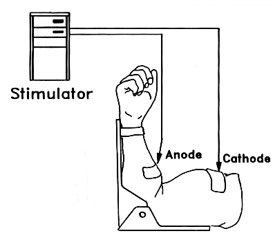
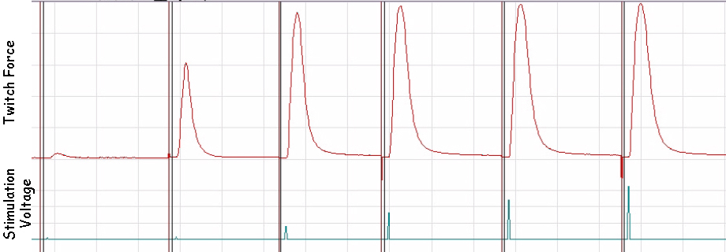
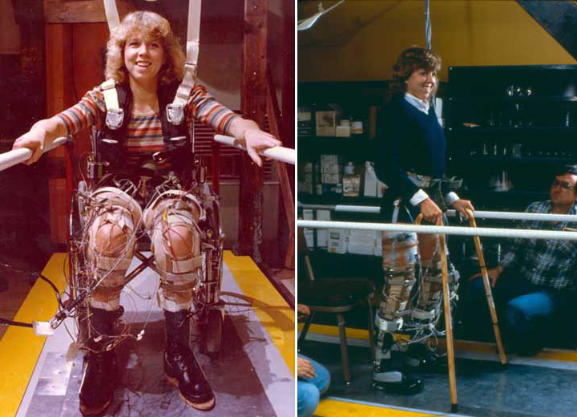

Myo-electric Stimulation of Muscle
Myo-electric stimulation is the electrical stimulation of muscle. An important application is the functional electrical stimulation (FES) which elicits contraction of paralyzed muscle. Before we look at the various applications of myo-electric stimulation, we will examine how it is achieved.
Methods of stimulation:
1) Nerve
2) Percutaneous
The figure below shows a situation of two pairs of small electrodes over the external obliques and a large pair of larer electrodes over the rectus abdominus.

Stimulator Control:

The stimulator uses a very short pulse (0.1ms) and varies the intensity with a voltage adjustment and a frequency adjustment. Increasing the voltage recruits more fibers and increasing the frequency increases the firing rate of the recruited fibers.


The force of muscle contraction is therefore modulated similarly to the way the central nervouse system uses recruitment and firing rate to modulate force (see the Muscle Mechanics lecture for more detail). However, there are some important differences between nature muscular activation and myo-electric stimulation.
Comparison with Voluntary Contractions:
Pain Considerations and TENS Units:
Applications:
1) Spinal Cord Injury (FES)
Injuries to the
spinal cord result
in paralysis and a reduced ability of the central nervous system to
activate muscles. Myo-electric stimulation with the purpose
of activating muscle is often called functional electrical stimulation
(FES). Jerold Petrofsky became famous in the 1980s when he was able to
apply electrodes with computer controlled stimulators to a student at
Wright State University to cause her lower extremity muscles to ride a
tricycle. The popular news magazine TV show called "60
Minutes" broadcast the feat and Petrofsky announced that the student
would be walking by the time she graduated. The student's
name is Nan Davis and she was an elite skier who was injured in a car
accident during the summer before she started university. She
was an excellent candidate for myo-electric stimulation because she had
tremendous muscular ability before her accident and those muscles had
not atrophied as much as others who had been paralyzed for longer
periods.

Benefits: - ambulation on terrain not friendly to wheelchairs
- reduced muscle wasting, loss of bone density, and bed sores
Challenges - weight bearing
- fatigue
2) Fatigue (Central vs Peripheral)
3) Individual
Muscle Isolation (Muscle Mechanics Experiments)
4) Rehabilitation (Stroke)
5) Prevention of Atrophy
- prolonged space flight
- long term immobilization
6) Motor Learning
7) Strength Gain and Weight Loss